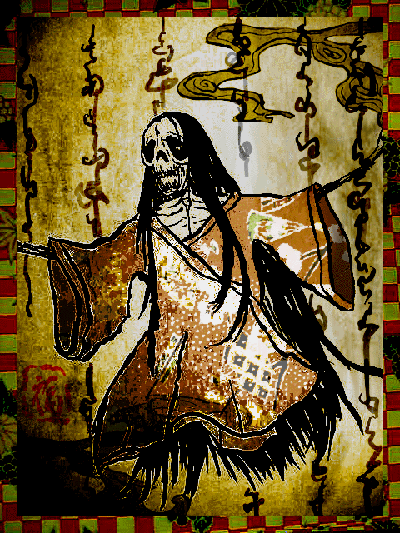

■弔哀妻死魂乃画■

作者：Nicolaevna
「今昔物語」巻弐拾七、弐拾伍話「人妻死後会旧夫語（ヒトノメシニテノチモトノオツトニアフコト）」を
分かりやすく意訳して絵本化した連作のうちの一枚。
いつの間にか荒れ果てていたその屋敷で、男は変わらぬままの姿の妻と再会する。
一度自分が捨てられたにも関わらず、妻は少しも恨む様子もなく笑顔で男を迎え入れた。
互いに積もる話を語り合い、月明かりの中で二人は静かに契りを交わした。
翌朝、日の光に男が目を覚ますと、腕の中には干からび骨と皮ばかりになった骸があった。
という場面。数ある古典の怪異譚の中でも、最も哀しくそして美しい平安時代の傑作。
皆さんも是非一度御読みになってｖ
<< Close >>